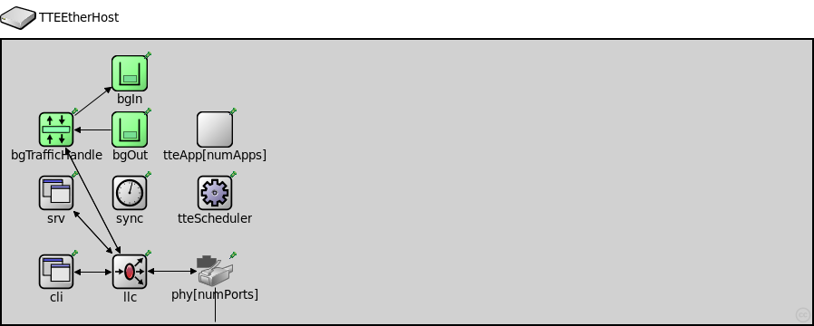
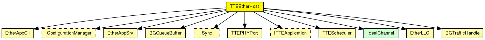
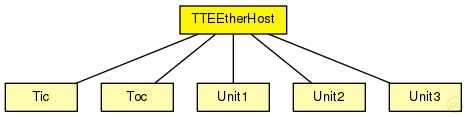

This documentation is released under the Creative Commons license
This documentation is released under the Creative Commons licenseModule for a TTEthernet Host. Contains a EtherLLC for best-effort traffic, a TTEPHYPort module as physical port, sync module (Sync) and a TTEScheduler module. The Host is configured by the provided TTEthernet XML network configuration (network_configuration parameter) and uses the device_name parameter to find its config. The configuration is done by the BufferManager that deletes itself at runtime.
TODO: Ports for redundancy!
TODO: Documentation for Applications!
See also: EtherLLC, TTEPHYPort, Sync, TTEScheduler, BufferManager
Author: Till Steinbach
The following diagram shows usage relationships between types. Unresolved types are missing from the diagram. Click here to see the full picture.
The following diagram shows inheritance relationships for this type. Unresolved types are missing from the diagram. Click here to see the full picture.
| Name | Type | Description |
|---|---|---|
| Unit1 | compound module | (no description) |
| Unit2 | compound module | (no description) |
| Unit3 | compound module | (no description) |
| Name | Type | Default value | Description |
|---|---|---|---|
| numApps | int | 0 | |
| numPorts | int | 1 | |
| hardware_delay | double | 0us |
| Name | Value | Description |
|---|---|---|
| display | bgb=894,314;i=device/device |
| Name | Direction | Size | Description |
|---|---|---|---|
| ethg | inout |
Physical port of the host |
| Name | Type | Default value | Description |
|---|---|---|---|
| phy.tteInput.incomings | string | "" |
Comma seperated list of ctc modules the input uses |
| phy.mac.address | string | "auto" |
MAC address as hex string (12 hex digits), or "auto". "auto" values will be replaced by a generated MAC address in init stage 0. |
| phy.mac.txQueueLimit | int | 1000 |
maximum number of frames queued up for transmission; additional frames are dropped. Only used if queueModule=="" |
| phy.mac.frameBursting | bool | true |
enable/disable frame bursting mode in Gigabit Ethernet |
| phy.mac.mtu | int | 1500 | |
| cli.destAddress | string | "" |
destination MAC address, or module path name of destination station; empty means off |
| cli.startTime | double | this.sendInterval |
time of sending the first request |
| cli.stopTime | double | 0 |
time of finish sending, 0 means forever |
| cli.sendInterval | double | uniform(0s,1s) |
interval between sending requests |
| cli.reqLength | int | 100B |
length of request packets |
| cli.respLength | int | 1KiB |
length of response packets |
| tteScheduler.tick | double | 80ns |
Length of a tick |
| tteScheduler.max_drift | double | 16ps |
Maximum clock drift (e.g 16ps for 200ppm at 80ns per tick) |
| tteScheduler.max_drift_change | double | 1ps |
Maximum clock drift change per cycle |
| tteScheduler.cycle_ticks | int | 37500 |
Number of ticks for one cycle |
| tteApp.buffers | string |
Comma seperated list of buffer modules the application is allowed to use |
|
| bgIn.priority | int | -1 |
Priority of the buffer (currently only used for rate-constrained traffic) |
| bgIn.ct_id | int | 0 |
Critical traffic ID of the buffer |
| bgIn.ct_marker | int | 0 |
Critical traffic marker of the buffer |
| bgIn.ct_mask | int | 0 |
Critical traffic mask of the buffer |
| bgIn.destination_gates | string | "" |
Comma seperated list of gates where the frames of the buffer are delivered |
| bgOut.priority | int | -1 |
Priority of the buffer (currently only used for rate-constrained traffic) |
| bgOut.ct_id | int | 0 |
Critical traffic ID of the buffer |
| bgOut.ct_marker | int | 0 |
Critical traffic marker of the buffer |
| bgOut.ct_mask | int | 0 |
Critical traffic mask of the buffer |
| bgOut.destination_gates | string | "" |
Comma seperated list of gates where the frames of the buffer are delivered |
// // Module for a TTEthernet Host. // Contains a EtherLLC for best-effort traffic, a TTEPHYPort module as physical port, // sync module (Sync) and a TTEScheduler module. // The Host is configured by the provided TTEthernet XML network configuration // (network_configuration parameter) and uses the device_name parameter to find its config. // The configuration is done by the BufferManager that deletes itself at runtime. // // @todo Ports for redundancy! // @todo Documentation for Applications! // // @see EtherLLC, TTEPHYPort, Sync, TTEScheduler, BufferManager // // @author Till Steinbach module TTEEtherHost { parameters: @display("bgb=894,314;i=device/device"); int numApps = default(0); int numPorts = default(1); double hardware_delay @unit(s) = default(0us); gates: // Physical port of the host inout ethg; submodules: // Physical port of the host phy[numPorts]: TTEPHYPort { @display("p=235,255,c,50"); } // LLC for best-effort traffic llc: EtherLLC { parameters: @display("p=141,256"); gates: upperLayerIn[3]; upperLayerOut[3]; } cli: EtherAppCli { parameters: registerSAP = true; @display("p=60,256,col"); } srv: EtherAppSrv { parameters: registerSAP = true; @display("p=60,169,col"); } // Buffer manager that creates the buffers according to the configuration configurationManager: <default("BaseConfigurationManager")> like IConfigurationManager { @display("p=999,999"); } // Sync module for synchronisation of the scheduler sync: <default("DummySync")> like ISync { @display("p=141,169"); } // Scheudler for the device tteScheduler: TTEScheduler { @display("p=235,169"); } tteApp[numApps]: <default("TTEAPITestApplication")> like ITTEApplication { @display("p=235,99"); } bgIn: BGQueueBuffer { @display("p=141,37"); } bgOut: BGQueueBuffer { @display("p=141,99"); } bgTrafficHandle: BGTrafficHandle { @display("p=60,99"); } connections: phy[0].phys <--> ethg; llc.lowerLayerOut --> phy[0].upperLayerIn; phy[0].upperLayerOut --> llc.lowerLayerIn; cli.out --> llc.upperLayerIn[0]; cli.in <-- llc.upperLayerOut[0]; srv.out --> llc.upperLayerIn[1]; srv.in <-- llc.upperLayerOut[1]; bgTrafficHandle.lowerLayerOut --> llc.upperLayerIn[2]; bgTrafficHandle.lowerLayerIn <-- llc.upperLayerOut[2]; bgTrafficHandle.out --> bgIn.in; bgOut.out --> bgTrafficHandle.in; }
This documentation is released under the Creative Commons license